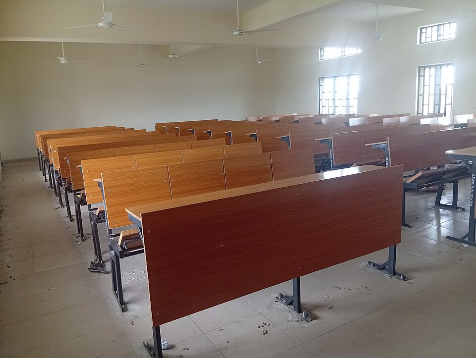
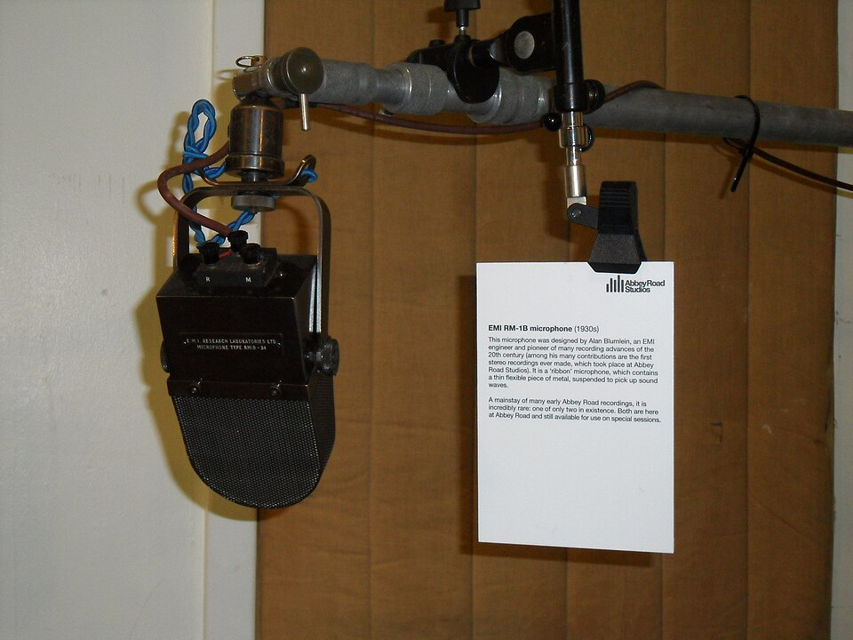

sasint
sasint
Good morning!
Nur das Schöne wird die Welt retten!
Fjodor Dostojewski
Nicht verzagen, Doc Alvers fragen!
Informatik — Grundkurs 11
Jetzt seid ihr dran
Blickkontakt, Stimme, Pausen, Technikausfall, Zwischenfragen
Nicht verzagen, Doc Alvers fragen!
Kapitel 01
Vor dem Publikum
Blick, Stand, Hände

Nicht verzagen, Doc Alvers fragen!
Wo wir stehen
Der Foliensatz steht, die Generalprobe ist gelaufen, die Rückmeldungen sind eingearbeitet
Heute halten die ersten Gruppen ihre Vorträge und geben ihr Portfolio ab
Alle anderen hören zu und geben Rückmeldung nach Kriterien
Leitfrage der Stunde: Was macht einen Vortrag aus, dessen Kernaussage ankommt?
Nicht verzagen, Doc Alvers fragen!
Der Fahrplan des Projekts
| Ustd. | Phase | Ergebnis der Phase |
|---|---|---|
| 1–2 | Themenwahl und Planung | Leitfrage, Projektskizze, Meilensteine |
| 3–4 | Recherche | geordnetes, belegtes Material |
| 5–6 | Erarbeitung I | Gliederung und Rohfassung |
| 7–8 | Erarbeitung II | geprüfte Endfassung |
| 9–10 | Präsentation ausarbeiten | Foliensatz und Generalprobe |
| 11–12 | Präsentationen I | erste Vorträge, Portfolio-Abgabe |
| 13–14 | Präsentationen II und Auswertung | Bewertung und Reflexion |
Grün: geschafft — Orange: heute
Nicht verzagen, Doc Alvers fragen!
So läuft jeder Vortrag ab
| Schritt | wer | was |
|---|---|---|
| 1. Aufbau | Gruppe | Datei auf dem Vortragsrechner testen, Ton und Auflösung prüfen |
| 2. Vortrag | Gruppe | in der vereinbarten Zeit |
| 3. Fragen | alle | Fragen aus dem Publikum, souverän und ehrlich beantwortet |
| 4. Rückmeldung | alle | erst die Gruppe selbst, dann das Publikum, zuletzt die Lehrkraft |
| 5. Abgabe | Gruppe | das Portfolio |
Bewertet wird nach der Bewertungsmatrix: docalvers.de/svp/bewertungsmatrix.html
Nicht verzagen, Doc Alvers fragen!
Blick und Stand
Blick ins Publikum, wechselnd zu verschiedenen Personen — wer die Folie anschaut, spricht zur Wand
Der Wechsel verhindert, jemanden anzustarren
Stehen: seitlich neben der Projektionsfläche, dem Publikum zugewandt
Vor der Fläche steht man im eigenen Bild, hinter dem Rechner verschwindet man
Haltung: aufrecht, beide Füße fest — ständiges Wandern macht unruhig
Nicht verzagen, Doc Alvers fragen!
Hände und Zeiger
Hände
sichtbar lassen — das wirkt offen
zum Zeigen und Betonen nutzen
nicht in die Taschen, nicht hinter den Rücken
ein Zettel in beiden Händen bindet sie fest
Zeiger
gezielt und kurz, um eine Stelle zu markieren
gezeigt wird, was gerade besprochen wird
dauerndes Kreisen macht unruhig
er ersetzt keine Erklärung
Nicht verzagen, Doc Alvers fragen!
Nervosität
Nervosität ist normal — und meist unsichtbar
Akzeptieren, langsam beginnen, ruhig atmen
Üben senkt sie, Entschuldigungen verstärken sie
Nicht auswendig lernen: Ein Aussetzer blockiert sonst den ganzen Ablauf
Stichworte erlauben Anpassung — nur Einstieg und Schluss lohnen sich wörtlich
Nicht verzagen, Doc Alvers fragen!
Kapitel 02
Stimme, Tempo, Pausen
Damit das Publikum mitdenken kann

Nicht verzagen, Doc Alvers fragen!
Die Stimme
| Merkmal | so ist es richtig | so nicht |
|---|---|---|
| Tempo | etwas langsamer als im Gespräch, mit Pausen | so schnell wie möglich |
| Lautstärke | die letzte Reihe versteht mühelos | leise, weil es ruhig wirkt |
| Betonung | Lautstärke variieren, um Wichtiges zu betonen | immer gleich laut |
| Füllwörter | lieber eine Pause | äh, sozusagen |
Wer hinten nichts versteht, hört auf zuzuhören — ein kurzer Test im Raum klärt das vorher
Übertriebene Langsamkeit ermüdet allerdings auch
Nicht verzagen, Doc Alvers fragen!
Die Pause
Nach einer wichtigen Aussage: Pause — das Publikum braucht Zeit, sie aufzunehmen
Ohne Pause geht die Aussage im Folgenden unter
Zwei Sekunden wirken lang, sind aber richtig
Pausen wirken souverän, nicht unsicher
Gehäufte Füllwörter lenken vom Inhalt ab — eine Pause ist immer besser als ein äh
Nicht verzagen, Doc Alvers fragen!
Die Zeit einhalten
Eine Uhr sichtbar platzieren
Zwei Zwischenmarken im Kopf: nach einem Drittel und nach zwei Dritteln
Wer dort im Plan liegt, kommt pünktlich an
Schneller sprechen oder am Ende Folien überspringen zerstört den Schluss
Ein kurzer, beiläufiger Blick auf die Uhr ist Zeitkontrolle — nichts Schlimmes
Nicht verzagen, Doc Alvers fragen!
Kapitel 03
Wenn etwas schiefgeht
Faden, Technik, Fragen, Einwände
Nicht verzagen, Doc Alvers fragen!
Pannen und die richtige Reaktion
| Panne | richtige Reaktion |
|---|---|
| Faden verloren | kurz innehalten, auf die Notizen schauen, weitermachen |
| Fehler auf der eigenen Folie | beiläufig korrigieren und weitermachen |
| Technik fällt aus | ruhig zum vorbereiteten Ersatz wechseln: Ausdruck oder Handout |
| Zwischenfrage | kurz beantworten oder ausdrücklich auf später verweisen |
| kritischer Einwand | ernst nehmen, den berechtigten Kern anerkennen, sachlich antworten |
Das Publikum kennt den geplanten Text nicht — und bewertet den Umgang mit der Panne
Nicht verzagen, Doc Alvers fragen!
Was nicht hilft
Sich ausführlich entschuldigen — das macht die Lücke erst sichtbar
Von vorn beginnen oder hoffnungsvoll die nächste Folie aufrufen
Eine Zwischenfrage ignorieren — oder so ausführlich antworten, dass die Zeit platzt
Einen Einwand zurückweisen oder ihm sofort vollständig zustimmen
Gut ist: „Darauf komme ich in zwei Minuten.“
Nicht verzagen, Doc Alvers fragen!
Als Gruppe auftreten
Die Gruppe tritt als Einheit auf
Wer gerade nicht spricht, hört aufmerksam zu und bleibt sichtbar zugewandt
Nicht in den Notizen blättern, nicht die nächste Folie vorbereiten, nicht hinsetzen
Das Publikum sieht alle, nicht nur die sprechende Person
Nicht verzagen, Doc Alvers fragen!
Zuhören mit Kriterien
Das Publikum füllt den Bewertungsbogen aus — mit den Kriterien der Bewertungsmatrix
Zum Beispiel: Einführung, Gliederung, sachliche Richtigkeit, Vortragsstil, Zeit, Umgang mit Fragen
Notiert konkrete Beobachtungen: an welcher Stelle, was genau
Zwei konkrete Punkte sind mehr wert als zehn allgemeine
Der Bogen online: docalvers.de/svp/bewertungsmatrix.html
Nicht verzagen, Doc Alvers fragen!
Das wichtigste Ziel eines Vortrags: Die Kernaussage kommt an — mit Blick ins Publikum, ruhigem Tempo, bewussten Pausen und einem Plan für Pannen.
Merksatz
Nicht verzagen, Doc Alvers fragen!
Fun Facts
Die Angst, vor Publikum zu sprechen, hat einen Fachnamen: Glossophobie
Den berühmtesten Teil seiner Rede von 1963, I have a dream, sprach Martin Luther King frei — er stand nicht im Manuskript
Abraham Lincolns Gettysburg-Rede von 1863 hatte nur rund 270 Wörter und dauerte etwa zwei Minuten
Das Mikrofon auf der Kapitelseite ist ein EMI-Modell aus den 1930er-Jahren — ausgestellt in den Abbey Road Studios in London
Nicht verzagen, Doc Alvers fragen!
Checkliste Vortragstag
Datei auf dem Vortragsrechner getestet, Ton und Auflösung geprüft
Ersatz dabei: PDF auf dem Stick, Ausdruck oder Handout
Uhr sichtbar, Zwischenmarken im Kopf
Stichworte in den Notizen, Einstieg und Schluss sitzen
Portfolio vollständig und abgabebereit
Nicht verzagen, Doc Alvers fragen!
Eure Aufgabe
Vortragende Gruppen: Technik testen, vortragen, Fragen beantworten, Portfolio abgeben
Publikum: Bewertungsbogen ausfüllen — konkrete Beobachtungen statt allgemeiner Urteile
Feedbackrunde nach jedem Vortrag: erst die Gruppe selbst, dann das Publikum, zuletzt ich
Wer nächste Woche dran ist: letzter Probelauf mit Uhr
Zum Schluss: Aufgaben (20) auf der Planseite — Lösung pro Aufgabe zum Aufklappen
Nicht verzagen, Doc Alvers fragen!